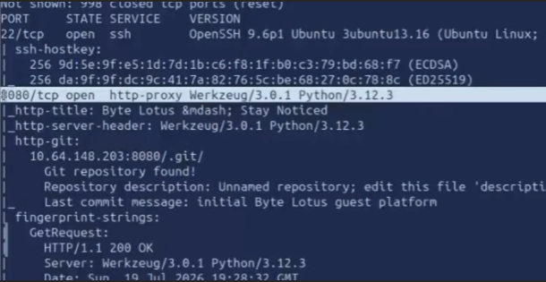
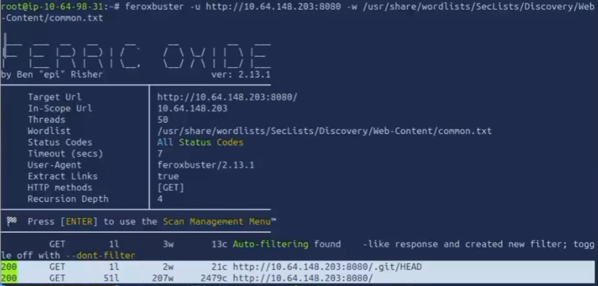
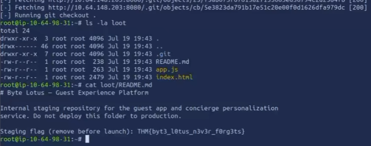

Plataforma
TryHackMe
Se descubrió un directorio .git expuesto públicamente en el servidor web del resort "The Byte Lotus". Mediante enumeración de directorios y posterior volcado del repositorio, se obtuvo el código fuente completo de la plataforma y una flag de staging contenida en el README.
El objetivo era una máquina accesible en el puerto 8080, que alojaba la plataforma de experiencia del huésped del Byte Lotus. Se realizó un escaneo de puertos con nmap para identificar servicios activos:
mkdir nmap
nmap -sC -sV -oN nmap/initial 10.64.148.203El escaneo reveló dos puertos abiertos:
El resultado más significativo fue que nmap detectó automáticamente un repositorio Git expuesto en 10.64.148.203:8080/.git/, con el mensaje de último commit: "initial Byte Lotus guest platform".

El servidor web exponía públicamente el directorio .git del proyecto. Esto significa que cualquier usuario podía acceder a la estructura interna del repositorio — incluyendo el historial de commits, el código fuente completo y archivos de configuración — sin ningún tipo de autenticación o restricción de acceso.
Esta es una mala práctica común en despliegues web donde se copia el directorio del proyecto (incluyendo .git) directamente al servidor de producción sin excluir los archivos de control de versiones.
-sC). Esto demuestra que la exposición era trivialmente detectable con herramientas estándar de reconocimiento.Paso 1 — Enumeración de directorios. Se utilizó feroxbuster para confirmar la estructura expuesta y buscar rutas adicionales:
feroxbuster -u http://10.64.148.203:8080 -w /usr/share/wordlists/SecLists/Discovery/Web-Content/common.txtFeroxbuster confirmó respuestas 200 en /.git/HEAD y en la raíz del sitio, validando que el repositorio Git era accesible públicamente.

Paso 2 — Volcado del repositorio Git. Con la confirmación de que .git era accesible, se procedió a volcar el repositorio completo localmente utilizando herramientas de git dumping:
# Volcado del repositorio y checkout de los archivos
ls -la loot
# Contenido: .git/ README.md app.js index.htmlPaso 3 — Extracción de la flag. Al examinar el contenido del repositorio volcado, se encontró la flag directamente en el archivo README.md:
cat loot/README.md
# Byte Lotus — Guest Experience Platform
#
# Internal staging repository for the guest app and concierge personalization
# service. Do not deploy this folder to production.
#
# Staging flag (remove before launch): THM{byt3_l0tus_n3v3r_f0rg3ts}
Con el volcado completo del repositorio se obtuvo:
app.js, index.html).El impacto va más allá de la flag: un atacante con acceso al código fuente puede identificar vulnerabilidades adicionales en la lógica de la aplicación, endpoints ocultos, y potencialmente credenciales hardcodeadas en el historial de Git.
.git del despliegue: nunca copiar el directorio .git al servidor de producción. Usar git archive o pipelines de CI/CD que exporten solo los archivos necesarios..*).git-secrets o trufflehog para detectar secretos en el historial antes de desplegar.Este ejercicio demuestra una vulnerabilidad clásica pero persistente en entornos web: la exposición de archivos de control de versiones. El hecho de que nmap la detecte con sus scripts por defecto subraya lo trivial que es encontrarla — y sin embargo sigue apareciendo en entornos reales.
La lección principal es sobre higiene de despliegue: el servidor de producción no es el servidor de desarrollo. Todo lo que no sea estrictamente necesario para servir la aplicación — incluyendo .git, README.md, archivos de configuración de desarrollo — debe ser excluido del deploy. La frase del propio README lo dice todo: "Do not deploy this folder to production", y sin embargo, ahí estaba.